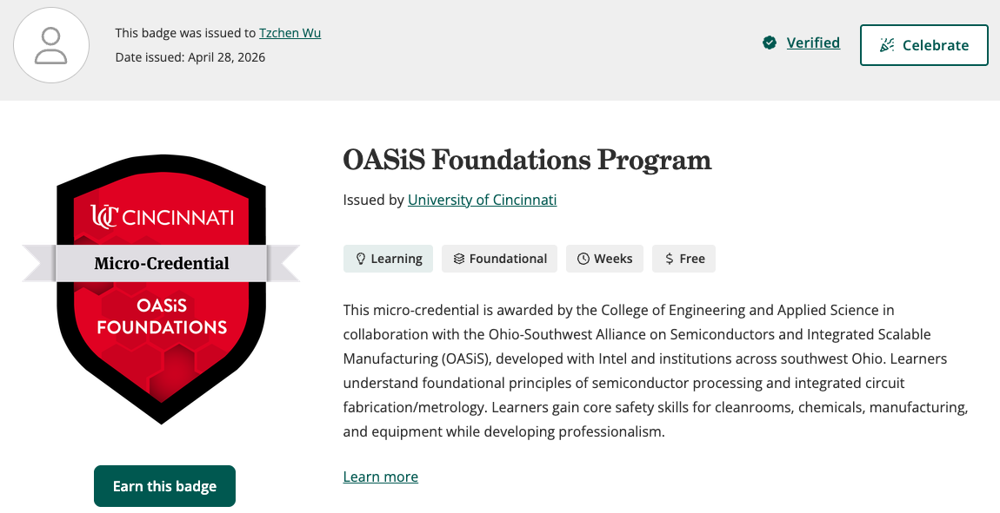
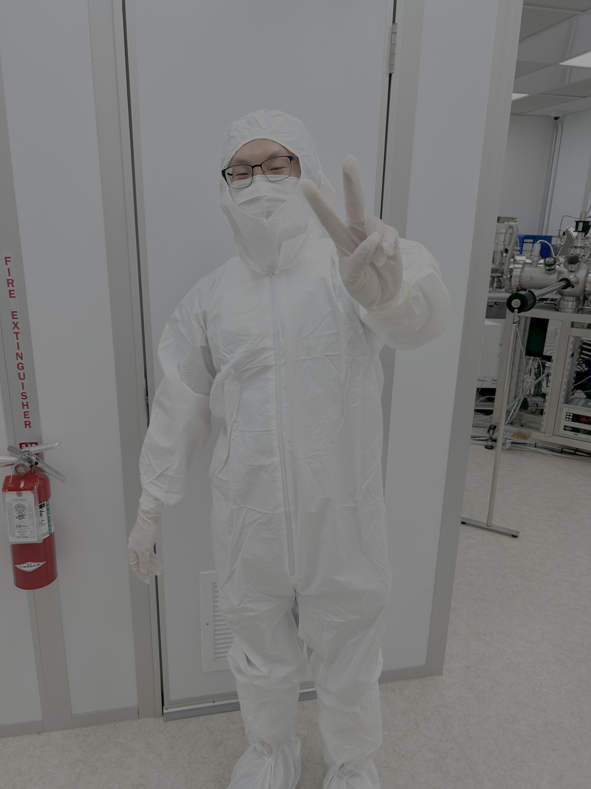
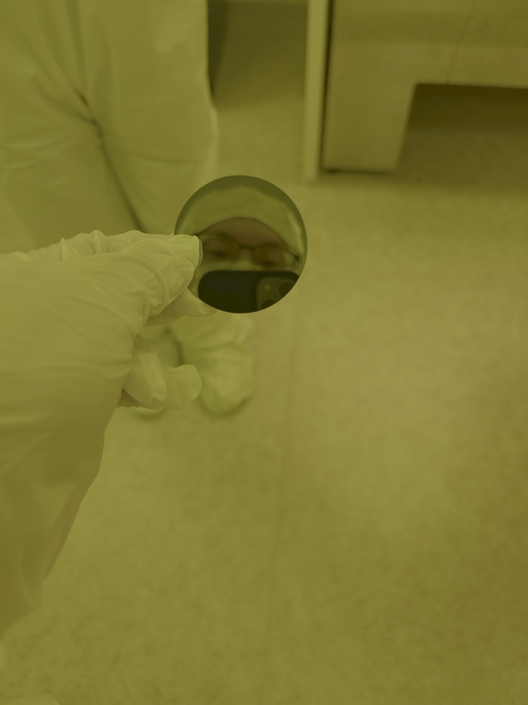
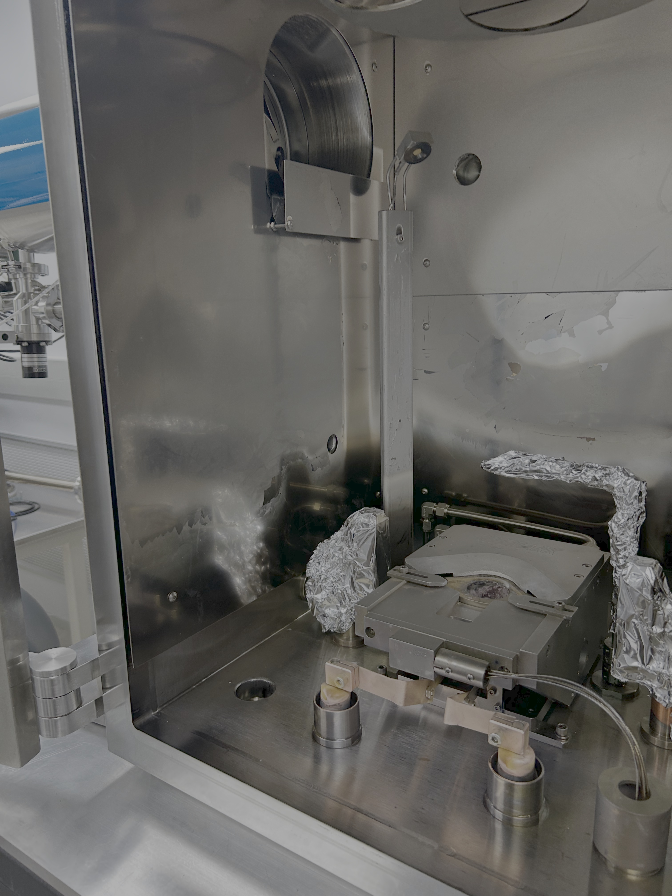

OASiS Foundations Program
A semiconductor manufacturing micro-credential focused on semiconductor processing, integrated circuit fabrication, metrology, cleanroom safety, and manufacturing fundamentals.
Credential
Completed the OASiS Foundations Program micro-credential through the University of Cincinnati.

Topics Covered
- Cleanroom environments and safety protocols
- Chemical safety in semiconductor processing
- Integrated circuit fabrication processes and metrology
- Semiconductor manufacturing and equipment safety
- Professional skills for semiconductor environments
- Hands-on cleanroom experience
Cleanroom Experience
The program included hands-on exposure to a semiconductor cleanroom environment, including gowning procedures, fabrication equipment, wafer handling, and basic process demonstrations.



What I Took Away
The program helped connect semiconductor device theory with the physical processes used to manufacture integrated circuits. It also gave me direct exposure to the safety procedures, contamination controls, and equipment used in semiconductor fabrication environments.